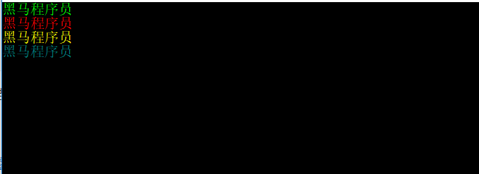
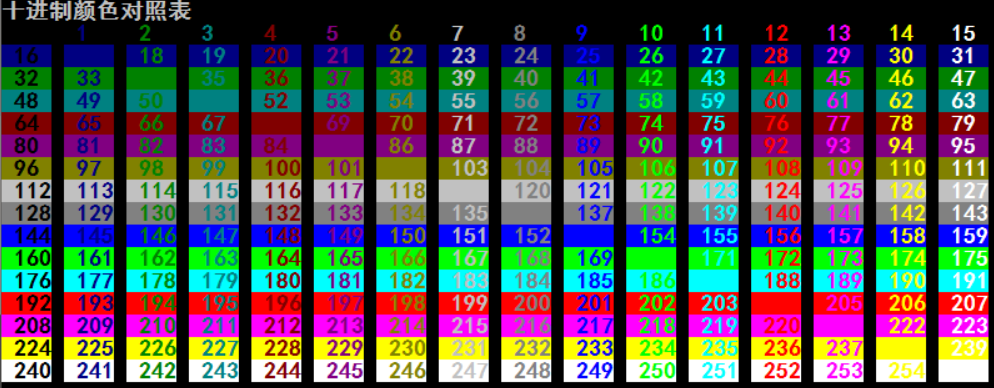
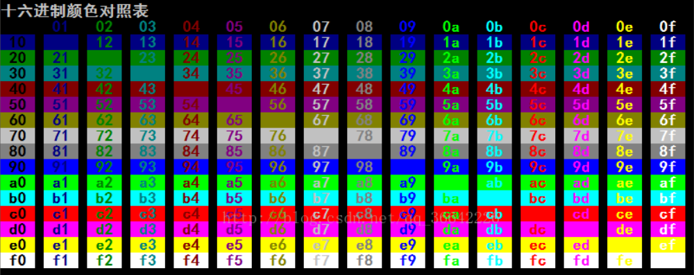

目录
句柄是Windows最常用的概念。它通常用来标识Windows资源(如菜单、图标、窗口等)和设备等对象。虽然可以把句柄理解为是一个指针变量类型，但它不是对象所在的地址指针，而是作为Windows系统内部表的索引值来使用的。
HANDLE在winnt.h中的声明为
typedef void *HANDLE;
从上面可以看出HANDLE是一种无类型指针，句柄是处理对象的一个接口，你可以通过句柄去操作程序中所涉及的对象。在windows中，句柄是和对象一一对应的32位无符号整数值，对象可以映射到唯一的句柄，
句柄也可以映射到唯一的对象windows需要向程序员提供必要地编程接口，在这些接口中，允许程序员访问，创建和销毁对象，但是，出于封装的考虑，windows并不想向程序员返回指针
如果作数据的话，句柄这种方式则允许你按自己的方式直接操作数据，但windows又不向你直接暴露数据。直接操作数据是程序员需要的，不暴露数据是windows所需要的，句柄封装方式实现了各取所需。
“句柄”是Windows最常用的概念。它通常用来标识Windows资源(如菜单、图标、窗口等)和设备等对象。虽然可以把句柄理解为是一个指针变量类型，但它不是对象所在的地址指针，而是作为Windows系统内部表的索引值来使用的。
参考示例:
HANDLE hOut = NULL;函数相关说明
HANDLE WINAPI GetStdHandle(_In_ DWORD nStdHandle);
功能：
获取指定标准设备的句柄（标准输入，标准输出或标准错误）
参数：
nStdHandle 标准设备。此参数可以是以下值之一。
STD_INPUT_HANDLE（DWORD）-10 标准输入设备。最初，这是控制台输入缓冲区
STD_OUTPUT_HANDLE（DWORD）-11 标准输出设备。最初，这是活动的控制台屏幕缓冲区
STD_ERROR_HANDLE（DWORD）-12 标准错误设备。最初，这是活动的控制台屏幕缓冲区
返回值：
如果函数成功，则返回值是指定设备的句柄，或者是先前调用SetStdHandle设置的重定向句柄。该句柄具有GENERIC_READ和GENERIC_WRITE访问权限，除非应用程序使用SetStdHandle设置具有较少访问权限的标准句柄。
如果函数失败，则返回值为INVALID_HANDLE_VALUE。要获取扩展错误信息，请调用GetLastError。
如果应用程序没有关联的标准句柄，例如在交互式桌面上运行的服务，并且未重定向它们，则返回值为NULL。在默认情况下：
标准输入（stdin）----键盘
标准输出（stdout）----显示器（屏幕）
标准错误（stderr）----显示器（屏幕）
注意：标准输出句柄和标准错误句柄默认情况下都是对应的屏幕
参考代码：
//定义句柄类型的变量
HANDLE hOut = NULL;
//获取标准输出句柄
hOut = GetStdHandle(STD_OUTPUT_HANDLE);函数相关说明
BOOL CloseHandle(HANDLE hObject);
功能:
关闭一个打开的对象句柄
参数：
hObject 打开对象的有效句柄
返回值：
如果函数成功，则返回值为非零值。
如果函数失败，则返回值为零。要获取扩展错误信息，请调用 GetLastError。参考代码:
//关闭句柄
CloseHandle(hOut);设置控制台文本属性（颜色），可以设置前景色FOREGROUND（文本颜色）和背景色BACKGROUND
BOOL WINAPI SetConsoleTextAttribute(HANDLE hConsoleOutput, WORD wAttributes);
功能：
设置控制台文本属性（颜色）
参数：
hConsoleOutput: 控制台屏幕缓冲区的句柄。句柄必须具有GENERIC_READ访问权限。
wAttributes: 字符属性
返回值：
如果函数成功，则返回值为非零值。
如果函数失败，则返回值为零。要获取扩展错误信息，请调用GetLastError。备注：要确定屏幕缓冲区的当前颜色属性，请调用GetConsoleScreenBufferInfo函数。
字符属性可以分为两类：颜色和DBCS。Wincon.h头文件中定义了以下属性。
| 属性 | 含义 |
|---|---|
| FOREGROUND_BLUE | 文字颜色包含蓝色。 |
| FOREGROUND_GREEN | 文字颜色包含绿色。 |
| FOREGROUND_RED | 文字颜色包含红色。 |
| FOREGROUND_INTENSITY | 文字颜色加强。 |
| BACKGROUND_BLUE | 背景颜色包含蓝色。 |
| BACKGROUND_GREEN | 背景颜色包含绿色。 |
| BACKGROUND_RED | 背景颜色包含红色。 |
| BACKGROUND_INTENSITY | 背景颜色加剧。 |
| COMMON_LVB_LEADING_BYTE | 前导字节。 |
| COMMON_LVB_TRAILING_BYTE | 尾随字节。 |
| COMMON_LVB_GRID_HORIZONTAL | 顶部水平。 |
| COMMON_LVB_GRID_LVERTICAL | 左垂直。 |
| COMMON_LVB_GRID_RVERTICAL | 正确的垂直。 |
| COMMON_LVB_REVERSE_VIDEO | 反转前景和背景属性。 |
| COMMON_LVB_UNDERSCORE | 下划线。 |
相关声明
//
// Attributes flags:
//
#define FOREGROUND_BLUE 0x0001 // text color contains blue.
#define FOREGROUND_GREEN 0x0002 // text color contains green.
#define FOREGROUND_RED 0x0004 // text color contains red.
#define FOREGROUND_INTENSITY 0x0008 // text color is intensified.
#define BACKGROUND_BLUE 0x0010 // background color contains blue.
#define BACKGROUND_GREEN 0x0020 // background color contains green.
#define BACKGROUND_RED 0x0040 // background color contains red.
#define BACKGROUND_INTENSITY 0x0080 // background color is intensified.
#define COMMON_LVB_LEADING_BYTE 0x0100 // Leading Byte of DBCS
#define COMMON_LVB_TRAILING_BYTE 0x0200 // Trailing Byte of DBCS
#define COMMON_LVB_GRID_HORIZONTAL 0x0400 // DBCS: Grid attribute: top horizontal.
#define COMMON_LVB_GRID_LVERTICAL 0x0800 // DBCS: Grid attribute: left vertical.
#define COMMON_LVB_GRID_RVERTICAL 0x1000 // DBCS: Grid attribute: right vertical.
#define COMMON_LVB_REVERSE_VIDEO 0x4000 // DBCS: Reverse fore/back ground attribute.
#define COMMON_LVB_UNDERSCORE 0x8000 // DBCS: Underscore.
#define COMMON_LVB_SBCSDBCS 0x0300 // SBCS or DBCS flag.测试代码:
#define _CRT_SECURE_NO_WARNINGS
#include<stdio.h>
#include<string.h>
#include<stdlib.h>
#include <Windows.h>
int main()
{
//定义句柄类型的变量
HANDLE hOut = NULL;
//获取标准输出句柄
hOut = GetStdHandle(STD_OUTPUT_HANDLE);
//设置文本属性为青色
SetConsoleTextAttribute(hOut, 10);
printf("黑马程序员\n");
//设置文本属性为红色
SetConsoleTextAttribute(hOut, 12);
printf("黑马程序员\n");
//设置文本属性为黄色
SetConsoleTextAttribute(hOut, 14);
printf("黑马程序员\n");
SetConsoleTextAttribute(hOut, 3);
printf("黑马程序员\n");
//关闭句柄
CloseHandle(hOut);
system("pause");
return 0;
}执行结果


